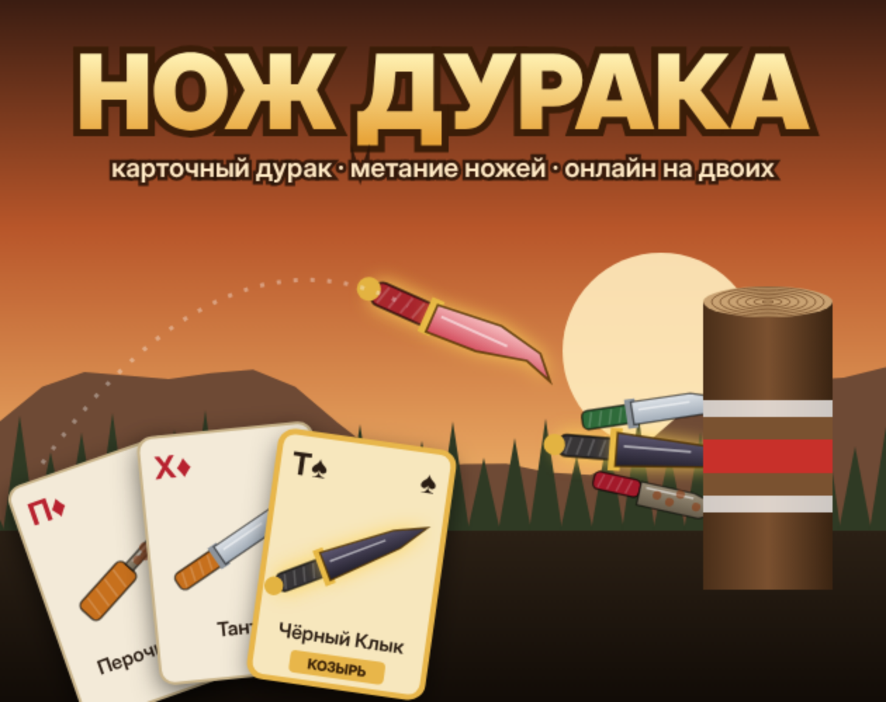
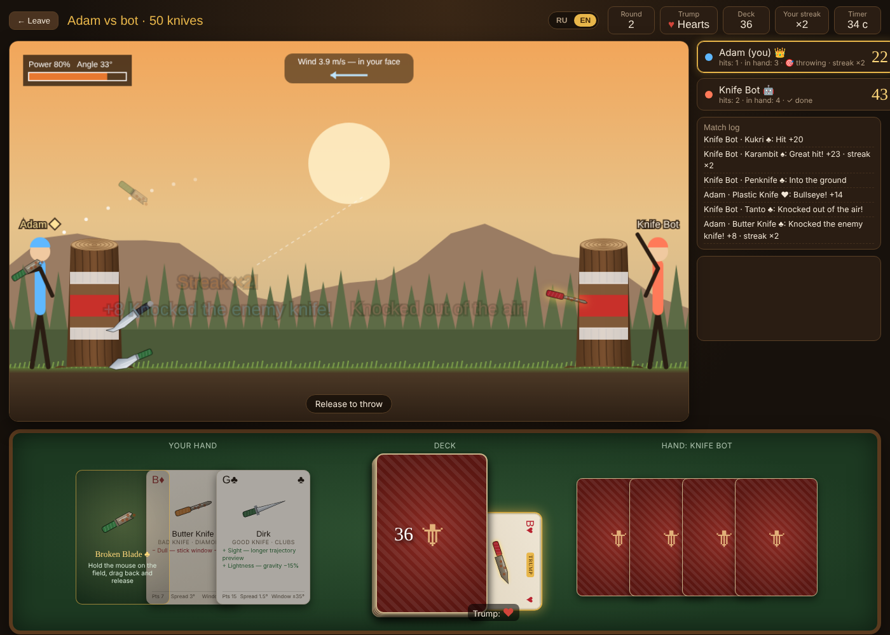
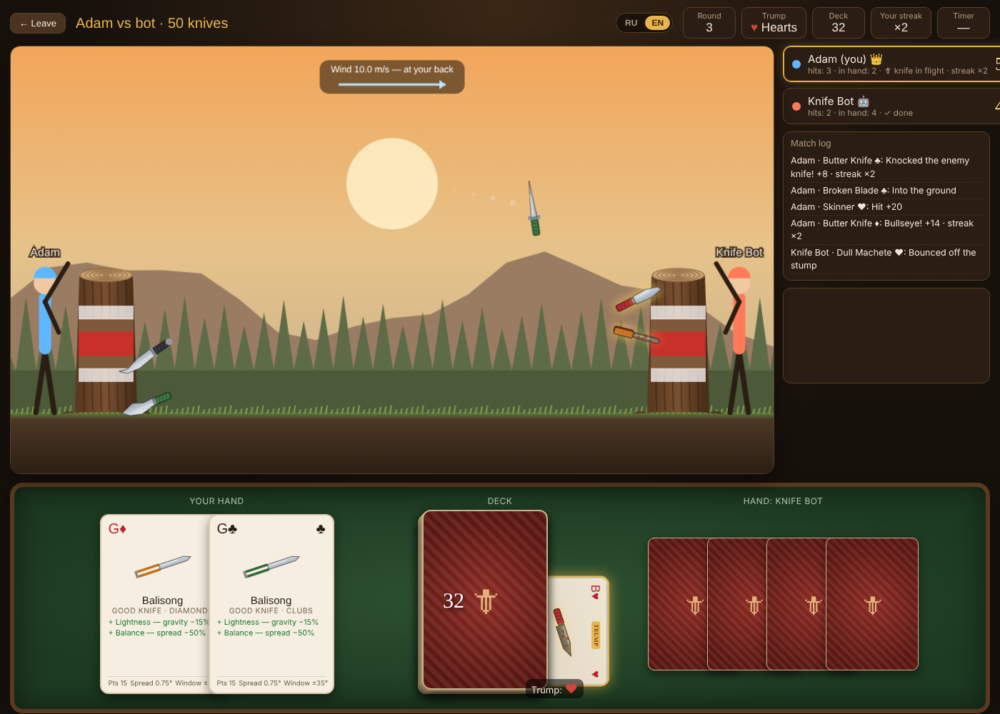
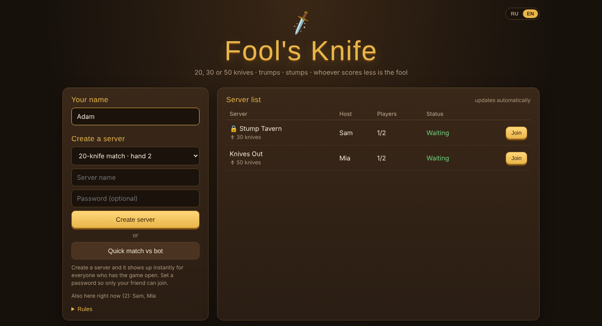

Fool's Knife
The Russian card game Durak — except every card is a throwing knife. Pick a blade from your hand, aim, and stick it into your opponent's stump. Both players throw at once, and you can knock their knife out of the air.

Features
Short matches, simple controls, and a surprising amount of strategy in which knife you throw and when.
Cards become knives
Pick a card from your hand and it turns into the knife drawn on it — each with its own ballistics, abilities and flaws.
Trump suit
Like in Durak, the bottom card sets the trump. Trump knives glow, gain an extra ability and quality, and shrug off the wind.
Simultaneous throws
No waiting for turns. Hit the stump and you throw again — chain up to five hits in a 50-knife match.
Mid-air knockdowns
Intercept your opponent's flying knife. A rusty blade that can't hit a stump can still knock down an ace.
Online lobby
Create a server (optionally with a password) and it shows up instantly in everyone's server list. No accounts, no install.
Bot opponent
Practise offline against a bot that picks its best knife and solves the trajectory — with a human-like wobble.
Screenshots
Click to enlarge.



The deck
Three match lengths. Every deck has four aces; the rest are split between good and bad knives of all four suits.
| Match | Aces | Good | Bad | Hand size |
|---|---|---|---|---|
| 20 knives | 4 | 8 | 8 | 2 |
| 30 knives | 4 | 13 | 13 | 3 |
| 50 knives | 4 | 23 | 23 | 5 |
How it works
Everything runs in the browser: one self-contained HTML file, plain JavaScript and Canvas 2D, no frameworks and no game server.
Deterministic ballistics
Each throw is a fixed-step simulation (120 Hz) with gravity, wind and spin. The knife sticks only if the blade faces the wood within the knife's “stick window”. Spread comes from a seeded PRNG, so every client replays an identical flight from just angle, power and seed.
Host-authoritative netcode
The player who creates a server runs the match engine in their own tab. Guests only send intents (take card, throw); the host validates them, simulates, scores and broadcasts state. No dedicated server to pay for or cheat against.
Hand-written MQTT client
Players find each other through free public MQTT brokers over WebSocket, with automatic fallback between three brokers. The ~200-line MQTT 3.1.1 client handles retained lobby entries and a “last will” that removes a server from the list when its host disappears.
Collisions & resilience
When a knife is thrown, the host checks its path against every enemy knife still in flight, time-aligned frame by frame. Scores are applied on landing, so a knocked-down knife never counts. Knives in flight are mirrored into the periodic state, so a dropped message never makes a knife vanish.